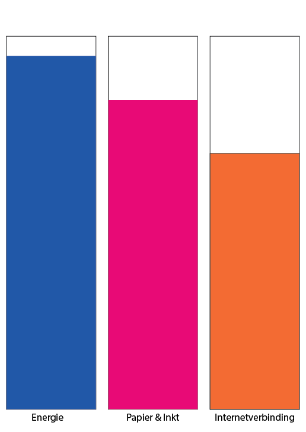

Schepsels beschikken over bepaalde kenmerken. Deze kenmerken die hen hun maken, hebben wij gegeven aan de dieren die ons een bepaald gevoel geven. Onder articical creaturs valt het onderwerp Celullar automa. Dit houdt in dat een bepaald gedrag wordt geprogrammeerd die tot een bepaald dier behoort. Uiteindelijk zul je een complex gedrag krijgen. Hierbij hoort het homeostasis model. Hieronder wordt een voorbeeld geschetst van een homeostasis model. Dit model is een balans tussen de behoeften.
Ik heb er voor gekozen om het homeostatis model van een printer te maken. De behoefte die mijn printer nodig heeft zijn: Een internetverbinding, ik stuur vanaf mijn laptop de documenten door naar de printer door middel van een internetverbinding. Ook heeft de printer stroom nodig, want zonder stroom gaat de printer niet aan. Daarnaast is er ook inkt en papier nodig, want anders valt er nergens op te printen. Zonder stroom voelt de printer zich moedeloos en heeft hij geen puf om überhaupt aan te gaan. Zonder papier of inkt wil de printer echt heel graag, maar hij heeft de middelen niet. Dit kan er soms toe leiden dat hij te hard van stapel loopt en uiteindelijk gaat vast lopen. Gelukkig geeft die dan wel snel aan wat hij nodig heeft. Of het papier is of inkt en in het geval van inkt, welke kleur inkt. Zonder wifi kan de printer eventueel wel werken, je moet dan alleen printen met de computer die door middel van een kabel verbonden is met de printer. Kortom energie is het belangrijkste, zonder engergie zou de computer niet aan gaan. Daarna is papier en inkt het belangrijkst. Zonder deze twee zou de computer lastig een opdracht uit kunnen voeren. Hierna komt pas de internetverbinding. Dit komt omdat er ook opdrachten naar de printer kunnen worden gestuurd door middel van de vaste computer en een kabel. Deze verhoudingen zijn duidelijk weergegeven in het onderstaande tabel.  Deze eigenschappen zijn ook terug te koppelen naar de mens toe. Het belangrijkste is dat je energie hebt. Voor de mens is dit eten, drinken en onderdak. Daarna komt de input. Je kunt het beste je taken uit voeren als je over voldoende producten beschikt. Als laatste komt de soorten verbindingen. Je kunt het gemakkelijkste met de auto heen en weer, maar met de fiets kan eventueel ook.
Een leuk voorbeeld van een creature vind ik the Bionic Penguin. The Bionic Penguin is gemaakt door Festo in 2009. De penguin kan door middel van geavanceerde technieken zich geheel natuurlijk voortbewegen in een ruimte. Zij glijden als het ware, net zoals een een echte penguin. Ook kunnen de flippers bewegen. Hieronder is een filmpje te zien van het project. Het vette aan dit project vind ik dat je goed kunt zien dat het een robot is, maar door dat het zo natuurlijk beweegt begin je er toch aan te twijfelen. Ook vind ik het erg knap dat ze het precies zo hebben kunnen ontwerpen.
Reflectie
Ik vind artificial creatures heel leuk. Maar in mijn leven totaal overbodig. Ik hoef geen apparaten die iets natuurlijks na kunnen doen, dat zie ik dan in de natuur wel. In sommige situaties lijkt het me wel nuttig. Bijvoorbeeld als iemand een kunstbeen moet en het in plaatst van een ijzer bot een robot is die net zo werkt als een echt bot. Ik kan voor mijzelf en mijn sociale omgeving nu niet een situatie kunnnen bedenken waarin dit nuttig is.